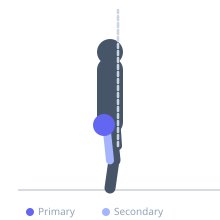
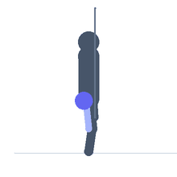

Exercise guide / Donkey Kick
Donkey Kick
The donkey kick is performed on all fours, kicking one leg backward and upward with the knee bent at 90° to extend the hip. The all-fours position allows the gluteus maximus to work through hip extension with the torso stabilized, isolating the glute from most other muscles. It is a beginner-friendly and low-impact exercise commonly used in rehabilitation, general fitness, and glute activation protocols. Resistance bands or ankle weights can add load.
Primary muscles
gluteus maximus
Secondary muscles
biceps femoris long head
Stabilizers
erector spinae
transverse abdominis
rhomboid major
Equipment
No Equipment (Bodyweight)
Optional
Resistance Band (Loop / Mini Band)


Starting position
- Begin on hands and knees (quadruped position) with wrists under shoulders and knees under hips. Spine neutral.
Setup
- No equipment required. A resistance band looped around both legs just above the knee adds progressive resistance.
Steps
- Step 1: Begin on all fours with a neutral spine. Keep the core braced.
- Step 2: Keeping the knee bent at 90°, raise one leg backward and upward by extending the hip.
- Step 3: Drive the foot toward the ceiling until the thigh is parallel to the floor and the knee is fully extended at the hip (hip is extended, not hyperextended at the spine).
- Step 4: Hold the peak position briefly and squeeze the glute.
- Step 5: Lower the knee back to the starting position. Complete all reps, then switch legs.
Coaching cues
- Kick back and up — not just back
- Keep the hip facing down — no rotation
- Brace the core — no spine sagging
Breathing
- Exhale as you kick back. Inhale as you lower.
Range of motion
- Extend the hip until the thigh is parallel to the floor. No higher — additional range comes from lumbar extension, not hip extension.
Tempo
- 1-1-2-0
Common mistakes
- Rotating the hip open toward the ceiling — keep the pelvis level and facing down
- Extending the lower back to increase range — the hip should extend, not the spine
- Letting the core sag — the spine stays neutral throughout
Safety
- Wrist discomfort can be reduced by making fists or using push-up handles
- Very low risk exercise suitable for beginners and those in rehabilitation
Training
- hypertrophy: 15–25 reps
- endurance: 20–30 reps
- hypertrophy: 2–4 sets
- endurance: 2–3 sets
- Rest: {'hypertrophy': 45, 'endurance': 30}